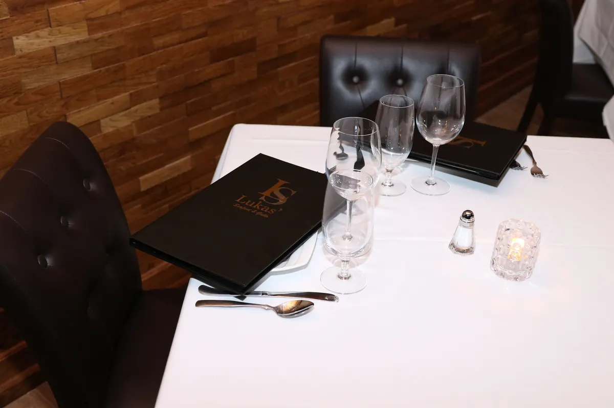

Lukas’ Seafood · Steak · Bar
The menus
Everything is printed the same way it is served — a la carte, plus a three-course prix fixe Sunday through Thursday.
Prix fixe
$45 — Sunday through Thursday
Choose a first course and a main course. Sides are $9, a lobster tail is $18, and there are no substitutes.
First course
- Burrata — Arugula, cherry tomatoes, prosciutto, balsamic glaze
- Manhattan Clam Chowder
- Arancini
- Bruschetta
- Cherry & shrimp bruschetta
- Scallops
- Gamberi
- Prosciutto
- Burrata Caprese
- Blackened shrimp & risotto
- Meatballs
- Homemade meat lasagna
- Linguini with seafood sauce
Main course
- Brioche
- Chopped tenderloin steak
- Chilean sea bass
- Horseradish salmon
- Filet mignon
- Filet mignon & portobello
- Shrimp risotto
- Lobster linguine
- Duck confit
- Lamb chops
- Grilled lamb chop
- Pork chop & peppers
- Braised short rib
- Steak frites
Ready when you are
Save a seat
Lukas’ is at 61C Mountain Blvd in Warren’s Town Center. Reservations are recommended, especially for weekends and the private room.